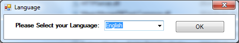
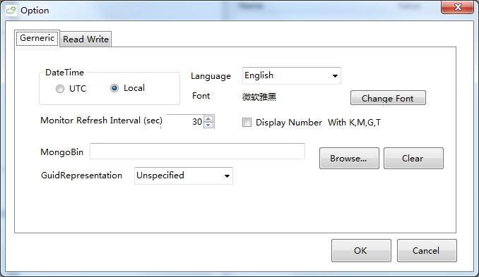
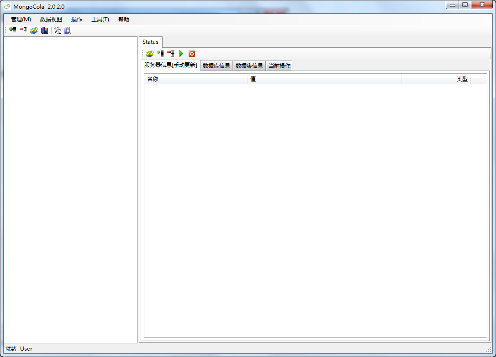
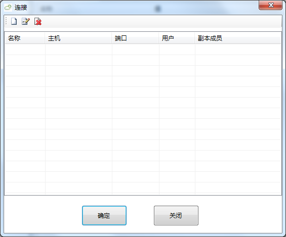
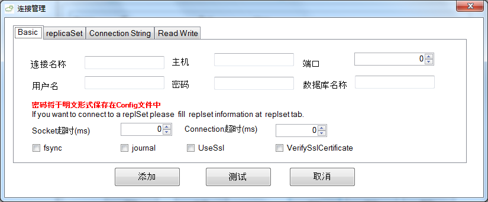

第一次启动
你可以选择简体中文作为程序的表示语言（繁体中文和日语现在已经部分支持了）

如果您下载了MongoDB的安装文件，您可以使用一些工具，请在下面的窗体中设定工具的路径

这里我们假设路径是 C:\runmongo\bin
如果启动正常，界面将会像下面这个样子.

（这里假设你将可执行文件放在 C:\runmongo\bin）
cd C:\runmongo\bin
mkdir C:\mongodb\magicdict
mongod --port 28030 --dbpath C:\mongodb\magicdict

More reference @mongodb.org: Quickstart Windows
[A Mongo connection is not only a single server,but also a replset,a route or config server in sharding system]
打开连接管理窗体:
菜单项：管理 -> 添加连接:

这里将会列出所有已经在软件中添加过的连接
如果是第一次运行软件，这个列表将是空的.
点击“添加”来新建一个连接

你可以只输入三个项目
- 连接名称(你可以按照自己的喜好命名)
- 主机(主机的ＩＰ地址，也可以用‘localhost’表示本地)
- 段口号
选中Bussiness复选框,点击确定按钮
左边的数据库对象需要手动更新，右边的服务器状态默认自动更新
你可以折叠或者收起数据库对象的树型结构:
- 菜单项：管理 -> 展开:
- 菜单项：管理 -> 收起: